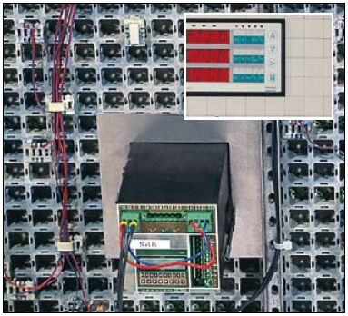

Since the majority of devices is designed for assembly on thin front panels made of sheet metal, some devices must be provided with special clamping rings or support brackets (particularly if the weight of a given device may cause front panel deformation).
 If the dimensions of a device do not correspond to a multiple of the board’s module, we offer a range of adaptor elements which allow for construction of a special frame helping to adjust the device to the module. Controllers and switches are usually mounted by means of adaptor plates with front sections covered with the same surface patterns as the front sections of the boards. Details concerning installation methods are individually agreed with the customer.